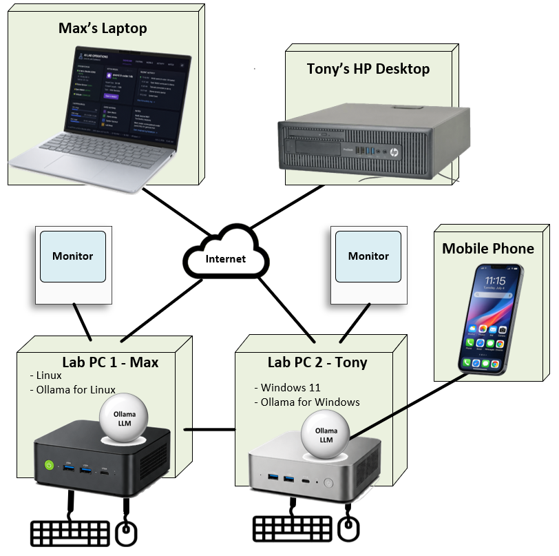
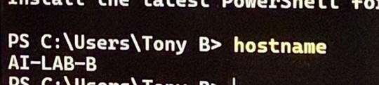
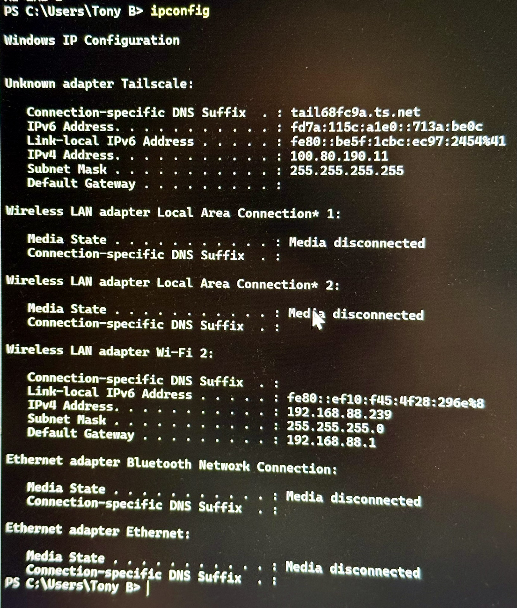
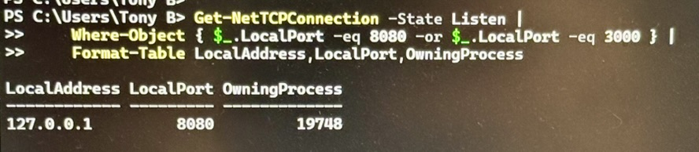
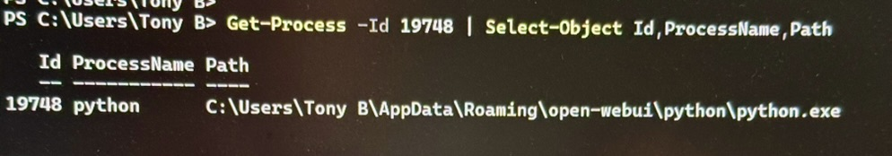
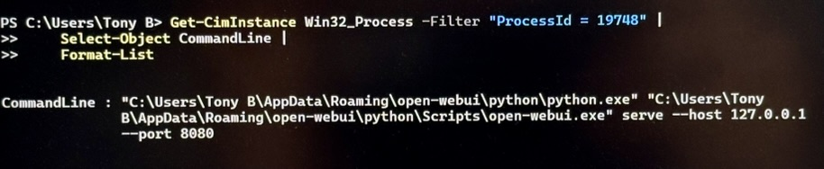
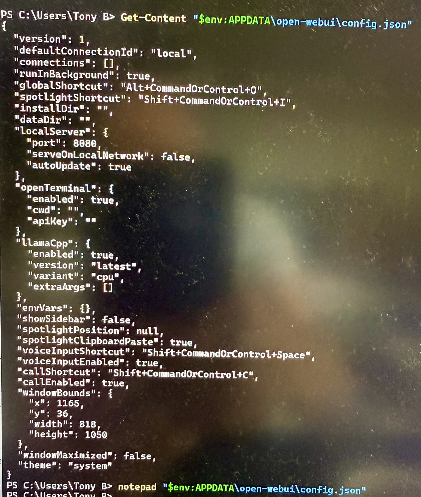
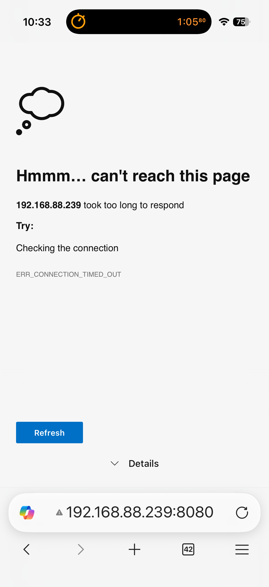
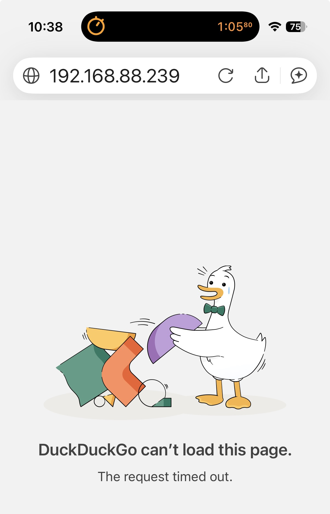
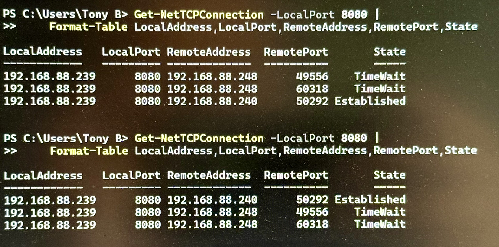

← Part 1: Local LLM Setup · AI Lab Portal Home
Part 1 established the local AI environment on Node A (Beelink SER9). Part 2 extends that environment to other devices on the local network.
This guide documents how Open WebUI was made accessible from an iPhone connected to the same Wi-Fi network as Node A, on July 4, 2026.

Allow an iPhone connected to the condo Wi-Fi network to use Open WebUI running on Node A.
| Hardware | Beelink SER9 |
|---|---|
| Operating System | Windows 11 |
| Active Network Interface | Wi-Fi 2 |
| LAN Address | 192.168.88.239 |
| Subnet Mask | 255.255.255.0 |
| Default Gateway | 192.168.88.1 |
| Tailscale Address | 100.80.190.11 |
| iPhone LAN Address (during testing) | 192.168.88.240 |


Tailscale was already present on the node, but cellular/Tailscale access was not tested during this phase — see Next Phase.

127.0.0.1 is the loopback interface — Open WebUI was reachable only from the node itself. Other devices on the LAN could not connect to that listener.
The owning process was identified as the Open WebUI Desktop app's bundled Python runtime:

explicitly launching with:

A server bound to 127.0.0.1 only accepts connections that originate from the same machine — that's why the iPhone couldn't reach it yet.
0.0.0.0 tells the server to listen on all available IPv4 interfaces, not just loopback. Clients never browse to 0.0.0.0 itself — the iPhone instead uses the node's actual LAN address:
The Open WebUI Desktop config file included:

serveOnLocalNetwork: falseAttempts to change this setting did not produce a persistent LAN-enabled startup — the Desktop app continued launching with --host 127.0.0.1 on its own. Persistent LAN-enabled Open WebUI startup remains unresolved. The server that worked for this session was launched manually, and the window running it has to stay open.
Early symptoms included several browsers attempting HTTPS instead of plain HTTP, secure-connection errors, roughly 60-second connection timeouts, an Invalid HTTP request received log line from Open WebUI, and later a WebSocket WinError 121 semaphore timeout. None of this yet identified whether the real problem was Open WebUI, Windows Firewall, the Windows network profile, or browser protocol behavior.


Two different browsers, same dead end — a good early sign the problem wasn't the browser.
This proved basic IP connectivity between the two devices — it did not prove that TCP port 8080, or any application port, was actually reachable.
To take Open WebUI out of the test path entirely, a plain Python HTTP server was started:
The iPhone still couldn't reach http://192.168.88.239:8000/, and no request showed up in the server console. That was actually useful: it removed Open WebUI as a suspect, confirmed the failure was at the network/firewall layer, and pointed the investigation at Windows itself.
The condo Wi-Fi interface was classified Public. Windows applies much more restrictive inbound behavior to Public networks than Private ones. Changing it:
After this rule was added, the iPhone successfully reached the Python server:
This was the decisive network-layer validation — the LAN path itself was proven to work.
While that temporary Python server was still running, the AI Lab Portal's own local files were browsed to from the iPhone and loaded successfully — including this Field Guide and its images. That's a useful secondary discovery: the Portal can be previewed from a mobile device on the local LAN before changes are pushed or deployed.
One caution, though: the temporary server was started from the Windows user profile root, which exposed the entire directory tree beneath it to any device that could reach port 8000 — not just the Portal folder. That's not a configuration to leave running. For future mobile-preview testing, the server should be started from inside the Portal directory specifically, so only that folder is exposed. See Security and Cleanup.
With the manually launched, LAN-bound Open WebUI server running:
the iPhone browsed to http://192.168.88.239:8080/ and Open WebUI loaded.

No screenshot of the loaded Open WebUI chat screen itself survived the session, but this is stronger proof than a photo would be: it's the network stack itself confirming a live, established connection from the iPhone's address to the Open WebUI port.
127.0.0.1 is not reachable from other LAN devices.0.0.0.0 allows a server to accept LAN connections, subject to firewall configuration.The temporary Python HTTP server exposed the full directory tree beneath the Windows user profile — not just the Portal folder — to any device that could reach port 8000.
Required cleanup on the node:
The dedicated Open WebUI port-8080 firewall rule should be kept. For future Portal mobile-preview testing, start the server from inside the Portal folder specifically:
LAN access is complete. The next objective is reaching Node A from the iPhone while the phone is on cellular data, outside the condo LAN.
Known starting point: Node A's Tailscale address is 100.80.190.11.
Future work: